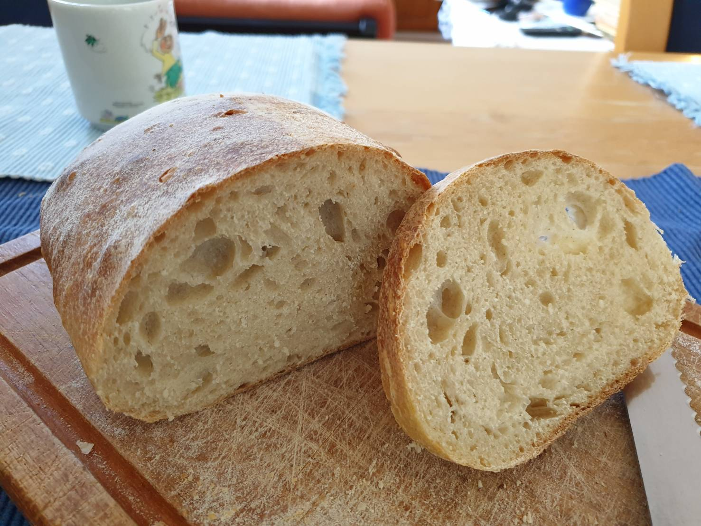

Dieses Sauerteigbrot mit 70% Hydration für Brotback-Einsteiger wird am Vorabend vorbereitet und am darauffolgenden Abend gebacken. Am Back-Abend sollten ca. 2 h für das Kneten und backen eingeplant werden.

Zutaten (Menge ×1)
Gib die gewünschte Menge an:
Vorteig
Sauerteig
Wasser in Raumtemperatur
Mehl Type 00 oder 550
Hauptteig
Wasser
Mehl Type 00 oder 550
Salz
Ofeneinstellung
⏲ 210°C Ober-/Unterhitze, 33 Minuten
Vorteig-Zutaten vor dem zu Bett gehen vermengen und bei Raumtemperatur bis zur Verdoppelung stehen lassen (8 – 12 h).
Am nächsten Morgen den Vorteig mit Hauptteig-Zutaten ohne Salz vermischen und 30 Minuten ruhen lassen.
Salz hinzugeben und Teig kneten, bis der Fenstertest erfolgreich ist.
Teig abgedeckt ~ 1 Stunde bei Raumtemperatur stehen lassen, dann bis zum Abend (8 – 12 h) in den Kühlschrank stellen.
Teig auf die Arbeitsplatte geben und alle vier Seiten bis zur Mitte falten, dann umdrehen und rundformen.
Auf die glatte Seite legen und etwas platt drücken, dann erneut falten und rundformen.
Ein drittes Mal wiederholen.
10 Minuten ruhen lassen.
Teigling formen: Mit der glatten Seite nach unten legen, etwas länglich und platt drücken. Die obere Seite zur Mitte falten. Dann die untere Seite über die obere falten. Die Naht mit den Fingern verschließen.
Brot für 50 Minuten im Ofen bei eingeschalteter Lampe gehen lassen. Dabei einen Behälter mit kochendem Wasser eine Etage über dem Brot platzieren.
Die Wasserschale entfernen und den Ofen auf 210°C vorheizen.